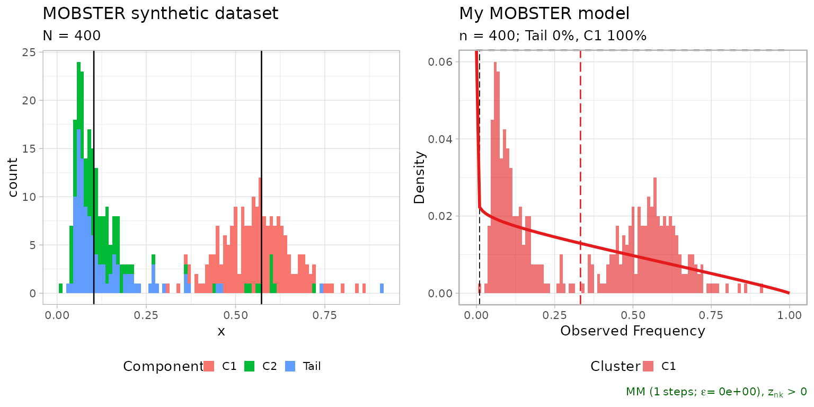
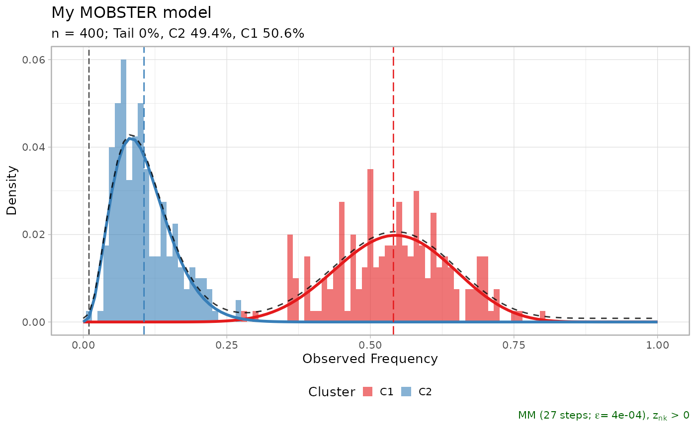
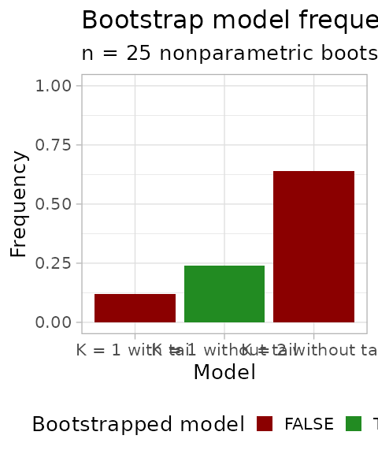
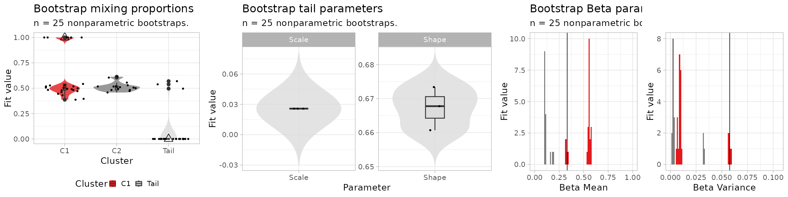
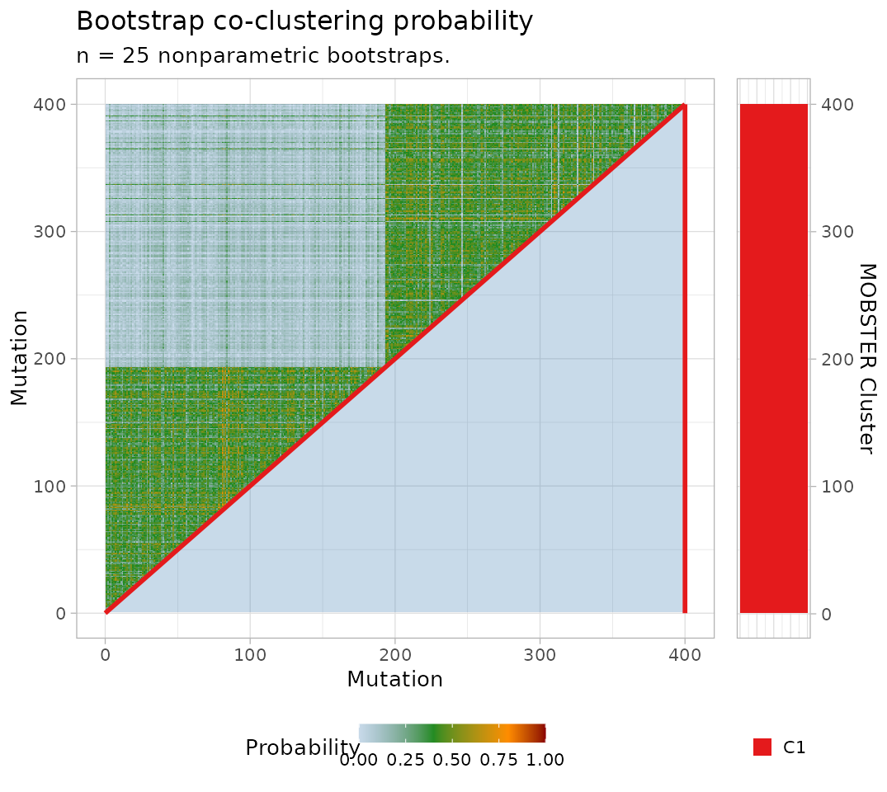

3. Confidence estimation by the bootstrap
Giulio Caravagna
21 November, 2025
Source:vignettes/a3_bootstrap.Rmd
a3_bootstrap.RmdBootstrapping a model
This vignette describes how to compute the bootstrap confidence of a MOBSTER model.
Both parametric and nonparametric bootstrap options are available: the former samples data from the model, the latter re-samples the data (with repetitions). Statistics are bootstrap estimates (averages) of the bootstrap fits. In both cases a model bootstrap probability can be computed, as well as the probability of clustering together any two mutations.
We show this with a small synthetic dataset .to speed up the computation.
# Data generation
dataset = random_dataset(
N = 400,
seed = 123,
Beta_variance_scaling = 100
)
# Fit model -- FAST option to speed up the vignette
fit = mobster_fit(dataset$data, auto_setup = 'FAST')
#> [ MOBSTER fit ]
#>
# Composition with cowplot
cowplot::plot_grid(
dataset$plot,
plot(fit$best),
ncol = 2,
align = 'h') %>%
print
Now we can compute n.resamples nonparametric bootstraps
using function mobster_bootstrap, passing parameters to the
calls of mobster_fit. This function by defaults runs the
fits in parallel (using a default percentage of the available cores);
parallel computing capabilities are achieved using package easypar.
# The returned object contains also the list of bootstrap resamples, and the fits.
bootstrap_results = mobster_bootstrap(
fit$best,
bootstrap = 'nonparametric',
cores.ratio = 0, # can be increased
n.resamples = 25,
auto_setup = 'FAST' # forwarded to mobster_fit
)
#> [ MOBSTER bootstrap ~ 25 resamples from nonparametric bootstrap ]
#> The output object includes the bootstrap resamples, the fits and possible error returned by the runs.
# Resamples are available for inspection as list of lists,
# with a mapping to record the mutation id of the resample data.
# Ids are row numbers.
print(bootstrap_results$resamples[[1]][[1]] %>% as_tibble())
#> # A tibble: 400 × 3
#> id VAF original.id
#> <int> <dbl> <int>
#> 1 1 0.553 12
#> 2 2 0.0999 259
#> 3 3 0.189 393
#> 4 4 0.525 14
#> 5 5 0.422 141
#> 6 6 0.570 192
#> 7 7 0.539 148
#> 8 8 0.687 106
#> 9 9 0.0669 375
#> 10 10 0.489 16
#> # ℹ 390 more rows
# Fits are available inside the $fits list
print(bootstrap_results$fits[[1]])
#> ── [ MOBSTER ] My MOBSTER model n = 400 with k = 2 Beta(s) without tail ────────
#> ● Clusters: π = 51% [C1] and 49% [C2], with π > 0.
#> ✖ No tail fit.
#>
#> ● Beta C1 [n = 202, 51%] with mean = 0.54.
#> ● Beta C2 [n = 198, 49%] with mean = 0.11.
#> ℹ Score(s): NLL = -237.82; ICL = -435.87 (-435.87), H = 3.81 (3.81). Fit
#> converged by MM in 27 steps.
plot(bootstrap_results$fits[[1]])
Errors of each run are available, if any.
print(bootstrap_results$errors)
#> NULLBootstrap statistics
Bootstrap statistics can be computed with
bootstrapped_statistics.
With nonparametric bootstrap the data co-clustering probability is also computed (the probability of any pair of mutations in the data to be clustered together). Note that this probability depends on the joint resample probability of each pair of mutations (each bootstrapped with probability , for mutations).
bootstrap_statistics shows to screen several
statistics.
bootstrap_statistics = bootstrapped_statistics(
fit$best,
bootstrap_results = bootstrap_results
)
#>
#> ── Computing model frequency ───────────────────────────────────────────────────
#> # A tibble: 3 × 3
#> Model Frequency fit.model
#> <fct> <dbl> <lgl>
#> 1 K = 2 without tail 0.64 FALSE
#> 2 K = 1 without tail 0.24 TRUE
#> 3 K = 1 with tail 0.12 FALSE
#>
#> ── Computing confidence Intervals (CI) for empirical quantiles ─────────────────
#>
#> Mixing proportions
#> # A tibble: 3 × 8
#> cluster statistics min lower_quantile higher_quantile max fit.value
#> <chr> <chr> <dbl> <dbl> <dbl> <dbl> <dbl>
#> 1 C1 Mixing proportion 0.387 0.392 1 1 1
#> 2 C2 Mixing proportion 0.458 0.463 0.610 0.613 NA
#> 3 Tail Mixing proportion 0 0 0.551 0.569 0
#> # ℹ 1 more variable: init.value <dbl>
#>
#> Tail shape/ scale
#> # A tibble: 2 × 8
#> cluster statistics min lower_quantile higher_quantile max fit.value
#> <chr> <chr> <dbl> <dbl> <dbl> <dbl> <dbl>
#> 1 Tail Scale 0.0257 0.0257 0.0257 0.0257 NA
#> 2 Tail Shape 0.661 0.661 0.673 0.673 NA
#> # ℹ 1 more variable: init.value <dbl>
#>
#> Beta peaks
#> # A tibble: 4 × 8
#> cluster statistics min lower_quantile higher_quantile max fit.value
#> <chr> <chr> <dbl> <dbl> <dbl> <dbl> <dbl>
#> 1 C1 Mean 0.314 0.316 0.576 0.576 0.332
#> 2 C1 Variance 0.00545 0.00608 0.0592 0.0599 0.0577
#> 3 C2 Mean 0.0983 0.0983 0.186 0.191 NA
#> 4 C2 Variance 0.00197 0.00198 0.0326 0.0328 NA
#> # ℹ 1 more variable: init.value <dbl>
#>
#> ── Computing co-clustering probability for nonparametric bootstrap ─────────────
#> Warning: `progress_estimated()` was deprecated in dplyr 1.0.0.
#> ℹ The deprecated feature was likely used in the mobster package.
#> Please report the issue at <https://github.com/caravagnalab/mobster/issues>.
#> This warning is displayed once every 8 hours.
#> Call `lifecycle::last_lifecycle_warnings()` to see where this warning was
#> generated.Visualising bootstrap results
Object bootstrap_statistics contains tibbles that can be
plot with specific mobster functions.
# All bootstrapped values
print(bootstrap_statistics$bootstrap_values)
#> # A tibble: 242 × 5
#> cluster statistics fit.value init.value resample
#> <chr> <chr> <dbl> <dbl> <int>
#> 1 C1 a 13.2 9.76 1
#> 2 C1 b 11.2 9.76 1
#> 3 C1 Mean 0.540 0.402 1
#> 4 C1 Variance 0.00977 0.00952 1
#> 5 C2 a 3.90 5.55 1
#> 6 C2 b 32.9 5.55 1
#> 7 C2 Mean 0.106 0.179 1
#> 8 C2 Variance 0.00250 0.00459 1
#> 9 C1 Mixing proportion 0.506 0.333 1
#> 10 C2 Mixing proportion 0.494 0.333 1
#> # ℹ 232 more rows
# The model probability
print(bootstrap_statistics$bootstrap_model)
#> # A tibble: 3 × 3
#> Model Frequency fit.model
#> <fct> <dbl> <lgl>
#> 1 K = 2 without tail 0.64 FALSE
#> 2 K = 1 without tail 0.24 TRUE
#> 3 K = 1 with tail 0.12 FALSE
# The parameter stastics
print(bootstrap_statistics$bootstrap_statistics)
#> # A tibble: 15 × 8
#> cluster statistics min lower_quantile higher_quantile max
#> <chr> <chr> <dbl> <dbl> <dbl> <dbl>
#> 1 C1 Mean 0.314 0.316 0.576 0.576
#> 2 C1 Mixing proportion 0.387 0.392 1 1
#> 3 C1 Variance 0.00545 0.00608 0.0592 0.0599
#> 4 C1 a 0.869 0.878 22.6 25.0
#> 5 C1 b 1.81 1.83 17.3 19.1
#> 6 C2 Mean 0.0983 0.0983 0.186 0.191
#> 7 C2 Mixing proportion 0.458 0.463 0.610 0.613
#> 8 C2 Variance 0.00197 0.00198 0.0326 0.0328
#> 9 C2 a 0.544 0.578 4.32 4.32
#> 10 C2 b 2.74 2.81 39.5 39.6
#> 11 Tail Mean Inf Inf Inf Inf
#> 12 Tail Mixing proportion 0 0 0.551 0.569
#> 13 Tail Scale 0.0257 0.0257 0.0257 0.0257
#> 14 Tail Shape 0.661 0.661 0.673 0.673
#> 15 Tail Variance Inf Inf Inf Inf
#> # ℹ 2 more variables: fit.value <dbl>, init.value <dbl>Bootstrapping, one can plot the model frequency across re-samples. A model is identified by its mixture components (e.g., 2 Betas plus one tail).
plot_bootstrap_model_frequency(
bootstrap_results,
bootstrap_statistics
)
The bootstrap estimates of the parameters can be visualised.
# Plot the mixing proportions
mplot = plot_bootstrap_mixing_proportions(
fit$best,
bootstrap_results = bootstrap_results,
bootstrap_statistics = bootstrap_statistics
)
# Plot the tail parameters
tplot = plot_bootstrap_tail(
fit$best,
bootstrap_results = bootstrap_results,
bootstrap_statistics = bootstrap_statistics
)
# Plot the Beta parameters
bplot = plot_bootstrap_Beta(
fit$best,
bootstrap_results = bootstrap_results,
bootstrap_statistics = bootstrap_statistics
)
#> Warning: No shared levels found between `names(values)` of the manual scale and the
#> data's colour values.
#> Warning: Removed 4 rows containing missing values or values outside the scale range
#> (`geom_bar()`).
#> Warning: No shared levels found between `names(values)` of the manual scale and the
#> data's colour values.
#> Warning: Removed 4 rows containing missing values or values outside the scale range
#> (`geom_bar()`).
# Figure
figure = ggpubr::ggarrange(
mplot,
tplot,
bplot,
ncol = 3, nrow = 1,
widths = c(.7, 1, 1)
)
#> Warning: No shared levels found between `names(values)` of the manual scale and the
#> data's colour values.
#> Warning: No shared levels found between `names(values)` of the manual scale and the
#> data's colour values.
print(figure)
For a nonparametric bootstrap we can plot also the co-clustering probability of the data.
plot_bootstrap_coclustering(
fit$best,
bootstrap_results = bootstrap_results,
bootstrap_statistics = bootstrap_statistics
)
#> Warning: No shared levels found between `names(values)` of the manual scale and the
#> data's colour values.